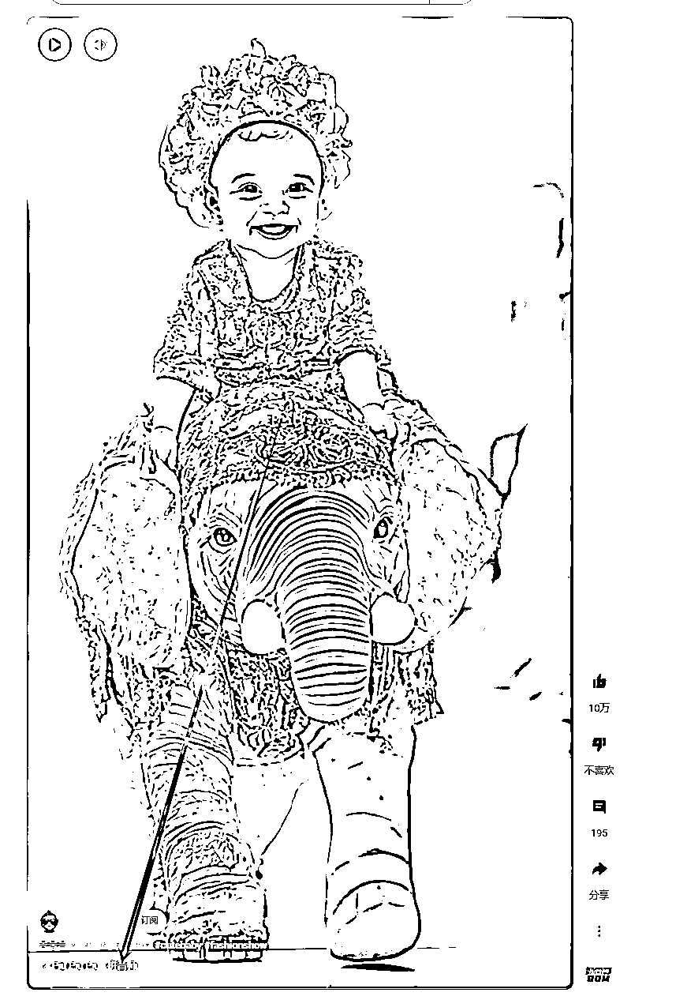
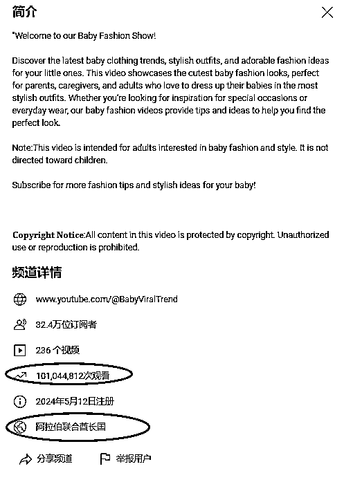

来源：https://yemahuyou.feishu.cn/docx/LqrQdiP3aoT6cmxeaVScS0qdnIf
今天讲讲YouTube Shorts如何寻找适合自己赛道以及收益解读：
(底部附 YouTube shorts 估算方法及简易代码)
先来看看YouTube Shorts 收益达标规则：
第一条并不是真正的达标规则，第二条才可以真正的开通收益，第一条只是能够开通部分功能。
我们来通过后台看看，拿一个最近在起的号：
每周更新一次，还有100多万没有算上要下周了，哪怕过了300W ，也得不到所谓的播放量收益，因为收益的标准不在这里。
300W播放-500订阅-90天 (Shorts) 或者 3000小时观看时长-500订阅-365天内（长视频）
1000W播放-1000订阅-90天 或者 4000小时观看时长-1000订阅-365天内（长视频）
从这些地方来解读，也就能理解了，真正开通收益，是需要1000W播放+1000订阅+90天内。或许你会被这1000W播放给吓到，但先别怕，油管是真给量，内容没问题，赛道没问题，基础播放量一万打底，爆款视频百万，千万也不是没可能，你账号天选之子，你运气UP，第一条视频就百万播放的也不是没有，起码我就好多个，包括TK也是，有些账号就是炸裂。
开头选对路子太重要了，不然前面白忙活！
说白了，就是要选好利基市场，也就是咱们常说的赛道。
那作为一个新人，我该如何选择赛道，到底什么样的Shorts内容能够获得盈利呢？我可不想做了老半天终于达到收益标准了，在人工审核那块过不去，那我不白瞎了？
通过工具和一些技巧我们可以大体得知这些赛道的真实情况，我们可以了解到，它开通率是不是够高，有没有一定的风险，它的收益情况具体是怎么样（大概范围）;
有了这些，我在看这个赛道是否适合我来做，是不是就心里有底气了一些，更加有信心了一些？1000W播放确实会打击一些人的积极性，Trust me! 当我接下来讲的这些，你会觉得这个Money，咋就这么吓人。
那么让我们来详细拆解一下如何趋吉避凶，绕过一些雷区赛道，让自己的成功率更大一些。
来，我们直接进入实战，很多圈友关注更多的是AI的赛道，觉得降本增效，最适合最方便，好，那我们来看一下，如果作为我，去寻找一个AI 赛道是否可以做，我会做那些动作？
我会明确一个目标：
市场被验证过，但不是很拥挤，还有一定创新空间，能够快速模仿的赛道为基准。
首先我要寻找5-10个对标账号，同类型风格，同类型选题以及文案，同样的画面展现，亦或者同样情绪价值。
咱们拿钱塘江鲤大佬采集出来的标签随便来找：
Cute Spiderman
这些都疑似有可能属于AI类频道，那我们挨个打开看一看：
OK，我们通过相似画面，挨个打开，能发现这里面大部分输出的有两个AI赛道：
第一组是一种类型，AI可爱萌娃走秀，加上对口型驱动会更加生动些，第二组和第三组本质上属于同一种，都是图片风格的转绘+简单特效转场+热门音乐+为了过重的人头抠图。
下一步，我们抽两个类型的赛道，准备5-10个频道，我们每个赛道先准备五个；
通过这两组频道视频中，热门音乐来找到高度垂直的账号，也可以通过热门音乐拓展其他细分赛道：

千万别觉得加人头很奇怪，这个方法最早是点评视频，证明观点类视频的变体，然后做tk中视频的影视切片，用了加人头过原创，又火了一波，第三次变体就放在了这里，因为AI类不容易开通YPP，所以把这个方法又拿出来了~

这个是近期的新赛道，AI视频生成的迭代升级，给了AI赛道新的活力。
####OK，我们得到了两组能够高度垂直赛道的信息渠道，那么我们整理出来各5个：
（这个近期，不是频道注册，而是点击最早视频，跟你这个赛道垂直的视频的第一条的三个月或者近期的视频有高爆内容）

https://www.youtube.com/@littleclassics7988
https://www.youtube.com/@AloAiTec
https://www.youtube.com/@CarterSophia
https://www.youtube.com/@BabyViralTrend
这个赛道太新了符合标准的是真难找，再次感受到钱塘江鲤大佬的思路有多么重要。
https://youtube.com/@MiawMilky
https://www.youtube.com/@sonjabriana3135
https://www.youtube.com/@BalluWala
https://www.youtube.com/@TeknoCatPro
https://www.youtube.com/@MrMajesty2
这类赛道内容很多，变体也有很多，但本质不变，只要遇到加人头的，给我的感觉就不会很好，或许不好开通，等下我们来看一看。我们用到货币化查询工具，https://ytlarge.com/youtube/monetization-checker/
https://ytlarge.com/youtube/monetization-checker/
我们先把runway show的一些频道，都过一遍看看信息：
在把AI视频转绘的走一遍：
好！ 干得漂亮！ 冒昧了！ 一个没猜对~ 也就不换案例了，我讲的是大概思路，真实点，说随机就随机找~
Runway Show的赛道 全部无法货币化，是真的吗？
我们分析一下，这个赛道很新，有的账号还是一个月内注册的，虽然数据达标，但是不显示货币化，我个人认为开通没问题。更大的可能是在开通的路上，亦或者api的数据还没有更新导致的。
如果你说单纯AI图，那种猫的故事，AI名人搞笑恶搞，过不了货币化，这个我信，因为我就在做，同质化太严重。
开通率太低，但当我换成图转视频后，它就直接过。所以runway show我觉得对于货币化这块没多大问题。
那我们在来看看AI视频转绘，全部货币化，全部原创，全量广告，这是我没想到的，我原以为这种赛道会一半一半，或许是加人头的原因？我没做过这类型，不能评价太多。
那我们来从一些状态上来做几个可能性判断：
货币化：即为开通收益
原创度：频道整体原创度的百分占比
频道广告状态：视频广告的投放状态（更多针对于长视频）
会出现以下可能性：
万事大吉，极大概率这个赛道在人工审核，机器审核的层面上不会有太大问题。
这种赛道大概率出在内容上，过不去YPP，账号或许是购买的收益号，后期改动后转型在这个赛道，这个频道之前过了YPP，但在后面的过程中被发现违规，侵权，不适应观看，被处罚了，Shadow Ban，就会限流，关掉收益等等处罚。
音乐版权分走了一部分
具体参考点击这里：
违反 YouTube 社区准则的内容，如仇恨言论、暴力、恐惧、误导性虚假信息、针对儿童但不适合儿童的内容、过度使用“家庭”一词、暴力极端主义或露骨内容，可能会触发限流处罚。
新号内容没问题的情况下，连续三天0播，也是属于影子禁令，也就是隐藏限流，这种账号直接更换即可。虽然持续发会救回来，但没必要，本身就是残疾，找点健康体质的吧！
货币化完毕后，我们肯定选择的就是三绿内容的赛道，那有了大概的判断，我会在去看它的天花板是怎么样的，它的爆款内容，是否处于平稳，最热门的视频前几排的掉量是不是很快。
（YouTube shorts的特殊性，它就吃爆款搞钱，你就别想每天靠1W 2W播放，后期收益号日落西山，都是养老的收益，所以我需要靠爆款，那我就得知道我感兴趣赛道的爆款上限）

Runway show 看起来是不是没有那么高，最炸裂的视频和第二炸裂视频的区间是不是很大？ 没错，如果它是一个存在时间比较长的赛道，我会直接放弃的，但它是新赛道，更是通过产业升级的AI迭代技术的赛道，我还是会选择它，够新，有很多发挥空间。
同样是千万播放的频道，最热门排序之间的差距太大，这种频道，不管是选题，画面还是文案，都不是你的首选. 如果这个赛道只有极个别频道是这样，那还是可以继续选择，只能说这个做的不好，不能说整个赛道不行。
如果我自己的账号在起号阶段是这样我可以接受，但是我模仿的人不能是这样，跟着千万赚百万，跟着一万赚一千。
在选题的时候，我会更关注垂直度以及能够辅助起量快的内容：
顾名思义，采集同类型赛道符合标准的频道，批量采集视频，按照播放量从高到低，从近到远的时间线，挨个抄，AI类就反推，重新画，重新生成，1比1去复刻猛猛干就完了。别考虑单账号得失，多来点号，让时间给你反馈。
一样要通过采集同类型赛道的优质内容，要给自己做一个定位，我只要什么内容，我要表达什么，我要提供什么情绪。
比如：
我做AI恶搞，我就选巨石强森和施瓦辛格做搭档，一捧一逗， 或者我就选择神偷奶爸和他的女儿的形象恶搞，那我这个频道发的都是这类内容，不换，不改。在通俗点，一段搞笑对话，我可以是巨石和施瓦辛格， 也可以是神偷奶爸和他女儿，一套内容我可以做出来N个垂直频道，这样说是不是能够理解一下。
（这类内容先挖坑，抽时间详细讲一下，它背后的魅力很大，一套内容在不同领域里面展现，还是挺有趣的，在自动化上我感觉挺爽。）
在我的理解，做Shorts，我是看账号的生命周期的，我一个号能搞多少，开通后巅峰期多少，养老期多少。Shorts比较特殊，生命周期有限，持续发展比较难，后劲儿不足，我还是认为长视频才是终局，希望这次3分钟的改动能够挽救一下。
可能已经忘记了Shorts的标准了，在上方，点击这里上去
我们举个例，先找到一个三绿频道，我找个对标出来：
我们看下数据：8月10日注册，美国地区，84个视频，152W订阅，我滴娘诶，我踏马之前采集这货的时候才4000多万，又是一个畜生。
好，短期内账号，解说类，快速爆量，现在1.1亿播放量，OK，之前是0.02-0.08千播，现在0.15左右，我们就算个最低值，0.1好不好，万播1刀，*10000 =1万刀
货币化网站下方有一个估算，不能以这个为主，但仅供参考。
那如果一个频道，有长视频，也有shorts，这个收益该怎么算，简单，先点一下shorts，最热门，去看他前几行大概播放量，减去1000W*1或者你开心就*3。
长视频减去你刚才估算Shorts最热门的前几排播放量，在看这个赛道是什么选题，什么类型，去*它所在领域的单价，就是大概收入，双方一加，大差不差，觉得有出入*0.8，觉得太少*1.2 .怎么开心怎么来，真正的收入只有作者自己知道。
懒得算的 跳转下方用代码跑也可以：
看收入,一是为了确定这个赛道有利可图，二是为了树立信心，坚持不下去的时候，打开计算器，扣一扣，算一算，抹把泪继续干。
仅用来节省计算用，在找对标的时候，一定要避开印度或者是一些看起来你就觉得不太值钱的国家，因为那些地方的播放量很高，但是单价低到吓人。